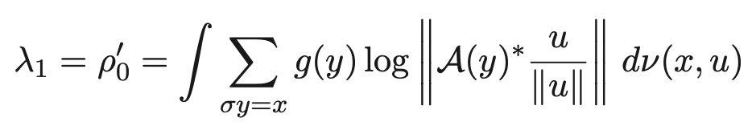
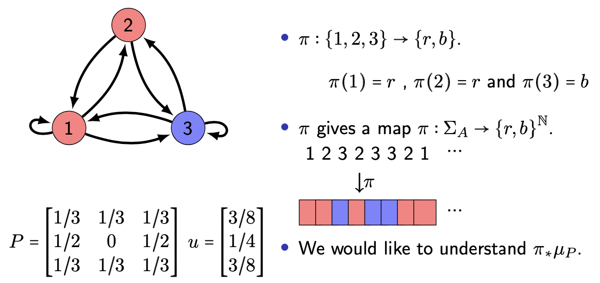

Research
Thermodynamic Formalism
Summary

This image is licensed under a CC-BY-SA-3 license. For more information and to find the original go here
{kind=link}
When a coin is tossed in the air it flips and rotates based on the laws of motion. Although we have a good understanding of these laws it remains infeasible to predict if the coin will land heads or tails. Thus we treat the outcome of a coin flip as a random event. In every area of science there are complex systems which evolve in time, often even though we understand the mechanism of these systems predicting their long term behavior remains impossible. The approach taken in ergodic theory is to treat these systems as random and attempt to make probabilistic statements about their long term average behavior. To make use of the powerful tools of ergodic theory one needs to find an invariant measure. However often a system has many different invariant measures each of which describes the long term behavior of different initial conditions. Thus if someone is interested in understanding particular types of initial conditions then a suitable invariant measure must be constructed which ``sees" those initial conditions. The process of constructing these invariant measures is called thermodynamic formalism; having its roots in statistical physics thermodynamic formalism mimics the physical principle that nature minimizes the free energy. The resulting measures are known as equilibirum states.
My work in this area has focused on studying equilibirum states which arise in multiplicative ergodic theory known as matrix equilibrium states. My work focuses on the use of transfer operators to understand these equilibirum states.
Papers
- Reference: Mark Piraino, Ergodic Theory and Dynamical Systems Volume 40, Issue 8 August 2020 , pp. 2219-2238
- Links: Journal ArXiv
- Abstract: We study the ergodic properties of a class of measures on full shits for which the meaure of a cylinder set is approximately the norm of a product of matrices. The measure is called a matrix Gibbs state. In particular, we give a sufficient condition for a matrix Gibbs state to have the weak Bernoulli property. We employ a number of techniques to understand these measures, including a novel approach based on Perron–Frobenius theory. We find that when t is an even integer the ergodic properties of mu(t) are readily deduced from finite-dimensional Perron–Frobenius theory. We then consider an extension of this method to t > 0 using operators on an infinite-dimensional space. Finally, we use a general result of Bradley to prove the main theorem.
Transfer Operators and Limit Laws for Lyapunov Exponents
Summary
For random variables taking values in the real numbers one if often interested in the asymptotic properties of sums. Similiarly if we have a random variable which takes values in the matrices we would like to understand the asymptotics of products. These asymptotics are described by numbers know as the Lyapunov exponents.
I am primarily interested in applying transfer operator techniques to understand these lypaunov exponents.
Papers
- Reference: Kiho Park Mark Piraino, submitted.
- Links: Journal ArXiv
- Abstract: We show that typical cocycles (in the sense of Bonatti and Viana) over irreducible subshifts of finite type obey several limit laws with respect to the unique equilibrium states for Hölder potentials. These include the central limit theorem and the large deviation principle. We also establish the analytic dependence of the top Lyapunov exponent on the underlying equilibrium state. The transfer operator and its spectral properties play key roles in establishing these limit laws.
Factors of Gibbs States / Hidden Markov measures
Summary
It is often the case that a random process can not be observed directly and instead we may only observe some function of it. The most famous example of this is information being transmitted across a noisey channel. The recipient recieves not the true random process (the information being transmitted) but instead some potentially modified version of it.
When the underlying random process is a Markov Chain the observed process is known as a hidden Markov chain. In my work I study a generalization of hidden Markov chains in which is original process is not Markov but still has very regular conditional probabilities. While it is well known that a hidden Markov chain can fail to Markov in my work I have shown that larger classes of processes are closed when the obscuring function is sufficiently nice.
Papers
- Reference: Piraino, M. Projections of Gibbs States for Höder Potentials. J Stat Phys 170, 952–961 (2018). https://doi.org/10.1007/s10955-018-1967-3
- Links: Journal ArXiv
- Abstract: We give a short proof that the projection of a Gibbs state for a Höder continuous potential on a mixing shift of finite type under 1-block fiber-wise mixing factor map has a Höder continuous g function. This improves a number of previous results. The key insight in the proof is to realize the measure of a cylinder set in terms of positive operators and use cone techniques.
- Reference: Mark Piraino 2020 Nonlinearity 33 742
- Link: Journal ArXiv
- Abstract: It has been an open problem to identify classes of Gibbs measures less regular than Höder continuous on the full shift which are closed under factor maps. In this article we show that in fact all of the classical uniqueness regimes (Bowen, Walters, and Höder) from thermodynamic formalism are closed under factor maps between full shifts. In fact we show more generally that the classical uniqueness regimes are closed under factors between shifts of finite type provided the factor map satisfies a suitable mixing in fibers condition.